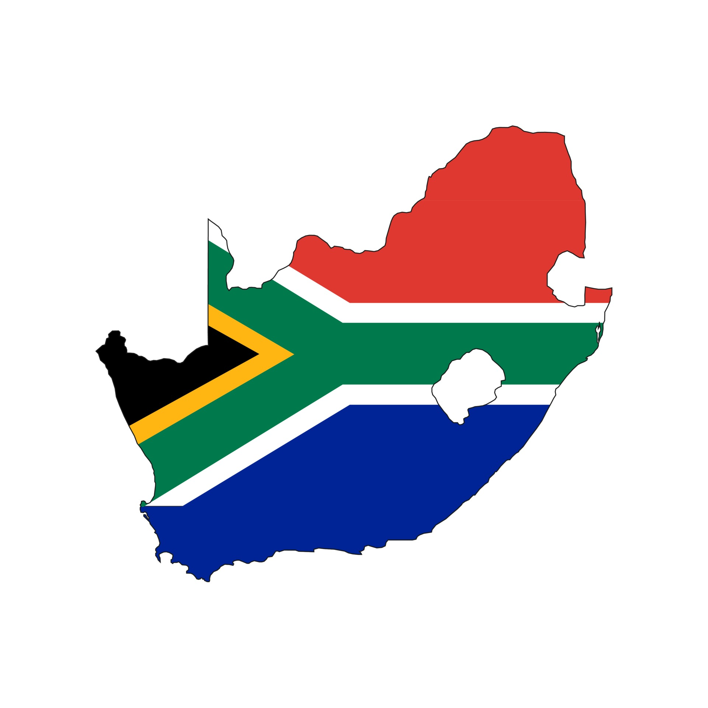
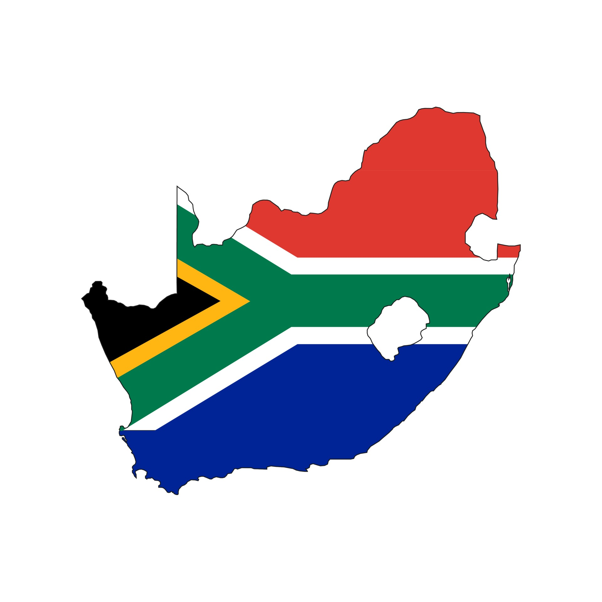

KENYA
POTENTIEL ENERGETIQUE
- Les centrales hydroélectriques de Seven Forks sont cinq centrales situées le long de la partie inférieure de la rivière Tana : la centrale électrique de Masinga, la centrale électrique de Gitaru, la centrale électrique de Kamburu, la centrale électrique de Kindaruma et la centrale électrique de Kiambere .
- Plusieurs petites centrales hydroélectriques ont également été mises en place en tant que systèmes autonomes pour fournir de l'électricité aux zones reculées.
- Bien que le gouvernement kenyan ait toujours compté sur l'hydroélectricité pour la production d'électricité, le changement climatique a eu un impact sur la dépendance à l'hydroélectricité en influençant les régimes de précipitations et de température, entraînant des périodes d'inondations et de sécheresses. Le gouvernement kenyan fait pression pour un passage à d'autres sources alternatives de production d'électricité. D'ici 2030, l'hydroélectricité ne représentera que 5% de la capacité totale. Des considérations doivent également être prises pour ne pas mettre en danger l'accès à l'eau potable lors de l'expansion du système énergétique.
-
Précarité énergétique:
La pauvreté énergétique est un problème persistant au Kenya, en particulier dans les communautés rurales. Seulement 40% de la population du Kenya a accès à une électricité fiable. Malgré les efforts du gouvernement pour subventionner les raccordements électriques, de nombreux ménages sont situés loin du réseau national, où il ne serait pas économiquement viable d'étendre l'électricité. Dans de tels cas, les familles dépendent souvent du bois de chauffage et du charbon de bois pour satisfaire leurs besoins énergétiques de base, qui ne sont pas fiables et pourraient entraîner une pollution de l'air intérieur. Des études ont montré que les faibles taux d'électrification dans les communautés rurales sont corrélés à des niveaux d'éducation inférieurs et à une espérance de vie plus faible. Pris ensemble, ces résultats soulignent l'importance de fournir un accès à des services énergétiques modernes pour améliorer le niveau de vie. Pour résoudre le problème de la pauvreté énergétique, la stratégie nationale d'électrification du Kenya a utilisé un outil de planification géospatiale pour identifier les options technologiques les moins coûteuses et les investissements associés nécessaires pour fournir une électricité abordable et fiable aux populations éloignées à faible revenu46. En particulier, les systèmes photovoltaïques payants ont été assez efficaces dans les endroits où l'extension du réseau n'est pas viable. Le principal défi est d'atteindre l'échelle nécessaire pour que cette stratégie de livraison soit financièrement viable. -
Potentiel d'énergies renouvelables sous-exploité:
Un autre défi avec les énergies renouvelables au Kenya est qu'une proportion substantielle des ressources d'énergie renouvelable est inexploitée. Bien que la majorité du mix électrique du Kenya provienne de sources renouvelables, le Kenya n'exploite qu'environ 30% de ses sources hydroélectriques, 4% de ses ressources géothermiques et une proportion beaucoup plus faible de ses potentiels éolien et solaire49. La forte dépendance vis-à-vis du pétrole importé et de la biomasse ligneuse exerce une pression importante sur les forêts restantes et accélère le processus de dégradation des terres. En outre, la demande d'électricité dépasse la capacité de production installée, et des incitations supplémentaires sont nécessaires pour inciter les investisseurs privés à investir dans des projets d'énergie renouvelable au Kenya.
INVESTISSEMENTS
-
Stratégie nationale d'électrification du Kenya :
Le gouvernement kenya a lancé la Stratégie nationale d'électrification du Kenya en 2018 pour fournir des options hors réseau, des mini-réseaux et des systèmes solaires autonomes aux communautés rurales. En partenariat avec la Banque mondiale et d'autres institutions, le projet a soutenu les efforts du gouvernement pour étendre l'accès à l'électricité aux comtés du nord et du nord-est du Kenya grâce à la fourniture par le secteur privé de produits solaires hors réseau.

 
 -
Prospectus d'investissement
De même, le gouvernement kenyan a également lancé le prospectus d'investissement pour attirer les investissements dans le secteur énergétique du pays. Le Prospectus est destiné à aider les investisseurs et les financiers à identifier les opportunités dans la production, la transmission, la distribution et l'électrification hors réseau pour répondre à l'offre prévue, comme indiqué dans Kenya Vision 2030.
-
La Geothermal Development Company (GDC) :
C’est une agence gouvernementale semi-autonome, est chargée de développer les gisements de vapeur et de vendre de la vapeur géothermique pour la production d'électricité à la Kenya Electricity Generating Company (KenGen) et aux producteurs d'électricité indépendants. La société de développement géothermique a foré 59 puits dans les projets Olkaria I à Olkaria IV entre 2009 et 201013 La vallée du Rift a un potentiel géothermique estimé à 15000 MW en utilisant la technologie d'aujourd'hui.
Aussi pour atteindre les objectifs d'énergie renouvelable énoncés dans "Vision 2030", le gouvernement kenyan a lancé plusieurs projets d'énergie solaire, dont:- La centrale solaire de Garissa a considérablement réduit les coûts énergétiques au Kenya et est devenue la plus grande centrale solaire de l'Est et du Centre Afrique.
- Plusieurs autres centrales solaires opérationnelles ou en construction comprennent : Rumuruti (40 MW), Radiant (40 MW), Eldosol (40 MW), Alten (40 MW), Kenyatta University (10 MW), Malindi (52 MW) et Kopere (50 MW).
- Centrale électrique géothermique d'Olkaria
- Des entreprises telles que M-Kopa proposent déja des plans de paiement à l'utilisation pour rendre les produits d'énergie solaire plus abordables et accessibles aux ménages à faible revenu.
-
Précarité énergétique
De tout ce que vous avez dit, ce n'est que par mon seul amour que je prétends auprès de vous mériter quelque chose ; et quant aux scrupules que vous avez, votre père lui-même ne prend que trop de soin de vous justifier à tout le monde ; et l'excès de son avarice, et la manière austère dont il vit avec ses enfants pourraient autoriser des choses plus étranges. Pardonnez-moi, charmante Élise, si j'en parle ainsi devant vous. Vous savez que sur ce chapitre on n'en peut pas dire de bien. Mais enfin, si je puis, comme je l'espère, retrouver mes parents, nous n'aurons pas beaucoup de peine à nous le rendre favorable. J'en attends des nouvelles avec impatience, et j'en irai chercher moi-même, si elles tardent à venir.
-
Puissance Afrique
-
Sociétés étrangères
Des entreprises occidentales voyant l’enorme potentiel qu’offre le Kenya, ont aidé à parrainer les efforts visant à introduire des solutions d'énergie solaire décentralisées dans le pays. Ces efforts ont fait du Kenya un leader mondial en nombre de systèmes d'énergie solaire installés par habitant.
-
Lighting Africa27
En outre, la Banque mondiale et la Société financière internationale (IFC) se sont associées dans le cadre d'une initiative Lighting Africa27.
-
Le Projet de développement géothermique de Menengaï
Fort d’une production qui a plus que triplé, de 198 à près de 672 mégawatts (MW) en six ans, le Kenya est devenu le premier producteur africain d’énergie géothermique. La mise en service de la centrale géothermique de Menengaï a permis au pays d’Afrique de l’Est de combler son déficit électrique pour surmonter les graves pénuries rencontrées vers la fin des années 2000. Le Projet de développement géothermique de Menengaï, financé en grande partie par la Banque africaine de développement à hauteur de 108 millions de dollars, a apporté une production de quelque 105 MW à la capacité de production nationale, selon le rapport d’achèvement du projet publié le 6 octobre par la Banque. Pour la mise en œuvre de la centrale, le nombre total de puits visés était une cinquantaine pour disposer d’assez de vapeur pour une capacité de production supérieure à 100 MW. Quelque 49 puits ont été forés jusqu’à la fin du mois de novembre de 2019, avec une capacité de 169,9 MW. Les résultats sont donc supérieurs à la capacité estimée initialement. Par ailleurs, une réduction de 600 000 tonnes d’émission de CO₂ par an devrait être réalisée à partir de 2022-2023. Pendant la phase de construction de la centrale, 94 membres du personnel ont suivi une formation dans les domaines du forage, de la passation des marchés et du financement ainsi que de la gestion de la santé et de la sécurité. Près de la moitié (44%) des membres formés sont des femmes. De plus, 249 membres du personnel de la société de développement géothermique (GDC), parmi lesquels 93 femmes, ont bénéficié d’une formation de groupe. La construction de la centrale géothermique de Menegaï bénéficie à environ 500 000 personnes, dont 70 000 dans les zones rurales du pays, ainsi qu’à des entreprises et des industries. Plus de 600 emplois ont été créés. « L’objectif ultime du projet était de jouer un rôle essentiel en aidant le Kenya à surmonter la grave pénurie d'électricité due à la variabilité de la production d’hydroélectricité, qui avait obligé le pays à recourir à une production thermique de secours onéreuse de 2011 à 2012, et qui s'est poursuivie jusqu'en 2018 », souligne le rapport conduit par Girma Mekuria, agent principal de l’Énergie à la Banque.
Politiques reglementaires en vigueur
- La Kenya Electricity Generating Company (KenGen)
- La Kenya Power and Lighting Company (KPLC)
- La loi a également créé le Conseil de réglementation de l'électricité pour déterminer les tarifs à la consommation et promouvoir la concurrence.
- Plus tard, la loi sur l'énergie de 2006 a créé la Commission de régulation de l'énergie en tant qu'unique agence de régulation chargée de réglementer les aspects économiques et techniques du secteur de l'énergie.
- Plus récemment, le président Uhuru Kenyatta a adopté la loi sur l'énergie de 2019 pour consolider les lois relatives à l'énergie et établir l'Autorité de réglementation de l'énergie et du pétrole à la place de la Commission de réglementation de l'énergie.
- Commission de régulation de l'énergie Infos sur la comission nationale de régulation
- Tarifs de rachat (FIT)